Lean construction e sustentabilidade são conceitos intrinsecamente ligados, focados na busca por processos mais eficientes e ecologicamente responsáveis na construção civil. Lean construction, também conhecida como construção enxuta, é uma abordagem derivada dos princípios da produção enxuta (lean production), desenvolvidos pela Toyota.
Esse método tem como objetivo principal aumentar a eficiência e a eficácia nas obras, minimizando desperdícios e maximizando o valor entregue ao cliente. A filosofia lean busca eliminar tudo que não agrega valor ao processo, otimizando recursos e melhorando a qualidade do produto final. Em suma, trata-se de criar mais valor com menos recursos.
Sustentabilidade, por outro lado, abrange práticas que permitem atender às necessidades atuais sem comprometer a capacidade das futuras gerações de atenderem a suas próprias necessidades. No contexto da construção, isso significa utilizar recursos de maneira consciente, promover a redução de resíduos, adotar práticas ecológicas e melhorar a qualidade de vida das comunidades envolvidas. A sustentabilidade busca equilibrar os aspectos econômicos, sociais e ambientais em todas as etapas de um projeto.
Nas unidades curriculares “Realizar concepção técnica do projeto de interiores” e “Projetar design de interiores sustentáveis”, este tema foi abordado, você se lembra? Que tal revisitar esses conhecimentos?
Para garantir que esses objetivos sejam alcançados, vários fatores são essenciais. Entre eles, destacam-se o consumo consciente de recursos, a logística reversa, a reutilização de materiais e ferramentas e a redução de desperdícios. Esses fatores, quando integrados aos princípios da lean construction, não só promovem um ambiente de construção mais eficiente e sustentável, mas também criam valor significativo para todos os envolvidos, desde os profissionais da construção até os clientes e a sociedade como um todo.
O consumo consciente de recursos é um pilar essencial tanto para a lean construction quanto para a sustentabilidade, pois visa o uso eficiente e racional de materiais e recursos durante a execução de um projeto, minimizando o impacto ambiental e promovendo práticas que favoreçam a sustentabilidade. O uso eficiente e racional de materiais e recursos implica em adotar técnicas que otimizem a utilização desses insumos ao longo de todas as etapas da construção, desde a escolha dos materiais até sua aplicação no canteiro de obras. Um planejamento cuidadoso e uma gestão adequada dos recursos garantem que não haja excessos ou desperdícios, resultando em um processo mais econômico e ambientalmente responsável.
Para minimizar o impacto ambiental, é crucial implementar práticas que promovam a economia de energia, de água e de materiais. A adoção de fontes de energia renováveis e a implementação de sistemas de eficiência energética podem reduzir significativamente o consumo de energia durante a construção. Da mesma forma, a economia de água pode ser alcançada com o uso de sistemas de captação e reúso e de equipamentos e técnicas que demandem menor consumo hídrico. A seleção de materiais também desempenha um papel vital, sendo importante optar por produtos que tenham menor impacto ambiental, como aqueles que são recicláveis ou compostos por materiais sustentáveis. A Santa Luzia, por exemplo, é uma empresa que oferece elementos decorativos feitos de isopor reciclado, investindo há quase 20 anos em tecnologias de redução de custos e emissões de CO2. Seus produtos incluem rodapés, rodameios e guarnições, disponíveis em várias cores, texturas e tamanhos.
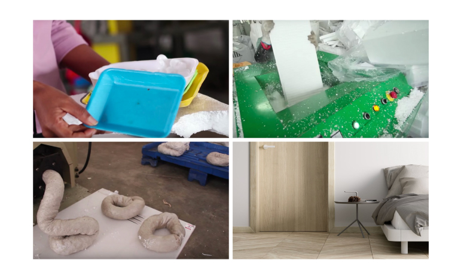
Isopor reciclado para fabricação de rodapés
Fonte: Migliani (2019)
Sequência de quatro imagens demonstrando o processo de fabricação de rodapés que utilizam isopor reciclado em sua composição. A primeira imagem mostra bandejas de isopor utilizadas para alimentos. A segunda imagem mostra o processo de triturar o isopor. A terceira imagem mostra uma massa homogênea gerada com o isopor. A última imagem mostra o rodapé produzido com o isopor aplicado no ambiente de um quarto.
O reúso e a reciclagem são práticas que devem ser incentivadas em todas as fases do projeto, pois a escolha de materiais que possam ser reutilizados ou reciclados ajuda a reduzir a demanda por novos recursos, diminuindo, assim, o impacto ambiental. A Rotor Deconstruction, uma empresa belga, recupera, condiciona e vende materiais de construção, ajudando a reduzir resíduos e o impacto ambiental. Além disso, presta assistência a proprietários, empreiteiros e arquitetos no uso desses materiais, que, muitas vezes, incluem peças de designers renomados e artesãos qualificados.
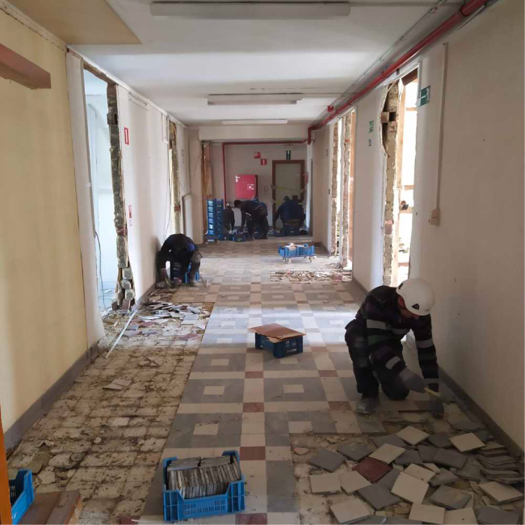
Retirada de ladrilhos hidráulicos de uma construção
Fonte: Souza (2021)
Fotografia mostrando homens trabalhando na retirada peça a peça do ladrilho hidráulico do piso de uma construção pela empresa Rotor Deconstruction.
Além disso, priorizar fornecedores que adotem práticas sustentáveis contribui para a construção de uma cadeia de suprimentos mais verde e responsável. Optar por fornecedores e mão de obra locais também é uma estratégia importante, pois, ao utilizar fornecedores e contratar mão de obra local, reduz-se a emissão de carbono associada ao transporte de materiais e pessoas. Essa prática fortalece a economia local, promovendo a sustentabilidade social e econômica, valorizando os recursos locais e gerando um impacto positivo nas comunidades envolvidas.
O uso de tecnologia na construção também é um aliado poderoso para o consumo consciente de recursos. A implementação de tecnologias que monitoram e controlam os recursos utilizados em tempo real, como sistemas de automação e sensores de presença, permite uma gestão mais eficiente e precisa. Esses sistemas ajudam a identificar desperdícios e a tomar medidas corretivas rapidamente, garantindo que os recursos sejam utilizados da maneira mais eficiente possível.
O consumo consciente de recursos na construção civil não apenas contribui para a sustentabilidade ambiental, mas também promove eficiência e economia no processo construtivo. Adotar práticas como as mencionadas é fundamental para tornar o setor da construção mais sustentável e responsável.
A logística reversa desempenha um papel importante na promoção da sustentabilidade no setor da construção civil, por meio da coleta, do transporte e da reciclagem dos materiais descartados durante a obra. Esse processo transforma o que seria lixo em novos produtos, reduzindo significativamente a extração de matérias-primas da natureza.
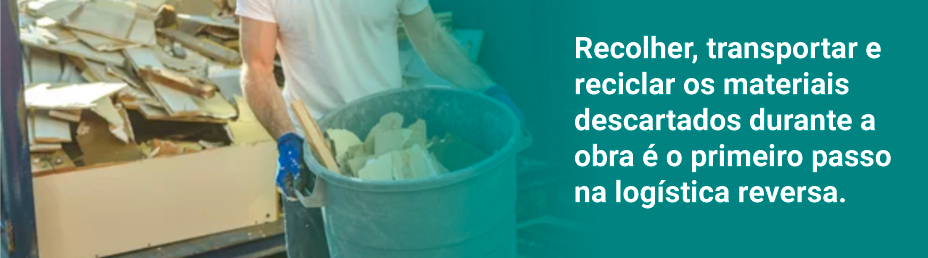 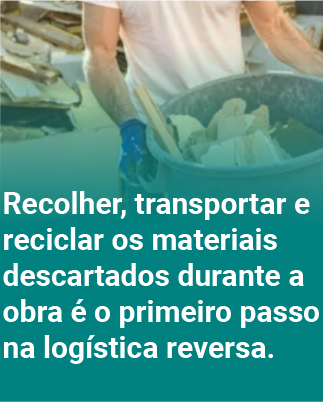Recolher, transportar e reciclar os materiais descartados durante a obra é o primeiro passo na logística reversa.
Durante a construção, uma grande quantidade de resíduos é gerada, incluindo sobras de materiais, como concreto, madeira, metal e plástico. Esses resíduos, se não forem adequadamente gerenciados, podem causar sérios danos ao meio ambiente. Implementar um sistema eficaz de recolhimento e transporte desses materiais para centros de reciclagem é essencial para garantir que eles sejam tratados de maneira ambientalmente correta. Empresas especializadas em gestão de resíduos podem ser contratadas para facilitar esse processo, garantindo que os resíduos sejam devidamente separados e encaminhados para reciclagem. Alguns fabricantes têm seus próprios programas de logística reversa.
A transformação dos materiais descartados em novos produtos é um aspecto fundamental da logística reversa.
Materiais recicláveis, como metal, vidro, papel e plástico, podem ser processados e transformados em novos produtos e reintroduzidos na cadeia produtiva. Por exemplo, resíduos de metal podem ser fundidos e transformados em novos componentes de construção, enquanto plásticos podem ser reciclados para a fabricação de materiais de isolamento ou tubulações. A madeira pode ser reutilizada ou convertida em produtos, como painéis de partículas ou compostagem. Esse ciclo de reutilização e reciclagem reduz a necessidade de extrair novas matérias-primas da natureza, preservando recursos naturais e diminuindo o impacto ambiental da construção.
O Instituto de Inovação Empresarial das Ilhas Baleares, por exemplo, tem um projeto que propõe reutilizar resíduos cerâmicos em Mallorca, Espanha, para criar materiais de construção sustentáveis, reduzindo a pegada de carbono e promovendo uma economia circular. Com foco em pavimentação para pedestres, ciclovias e áreas verdes, a argamassa higroscópica desenvolvida é composta por 85% de cerâmica triturada reutilizada com pedra reciclada e 15% de cimento branco estabilizado como um aglutinante de baixo impacto. Regula a umidade e permite a drenagem natural da água, integrando-se ao ambiente natural da ilha.
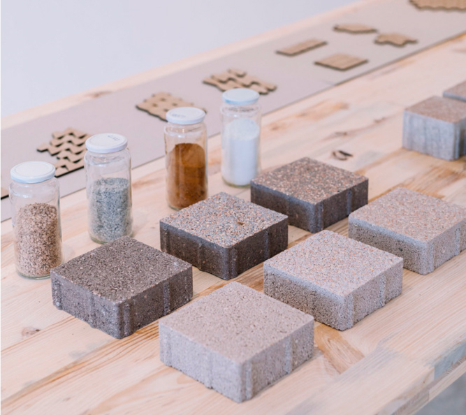
Peças de argamassa higroscópica
Fonte: Prieto (2022)
Peças de amostra produzidas de argamassa higroscópica sobre uma mesa. Próximo a elas, há vidros, cada qual com um insumo da composição.
A implementação da logística reversa na construção civil não só contribui para a sustentabilidade ambiental, mas também pode gerar benefícios econômicos. A reciclagem e a reutilização de materiais podem resultar em economias significativas nos custos de construção, ao mesmo tempo em que criam oportunidades para a inovação e o desenvolvimento de novos produtos e tecnologias.
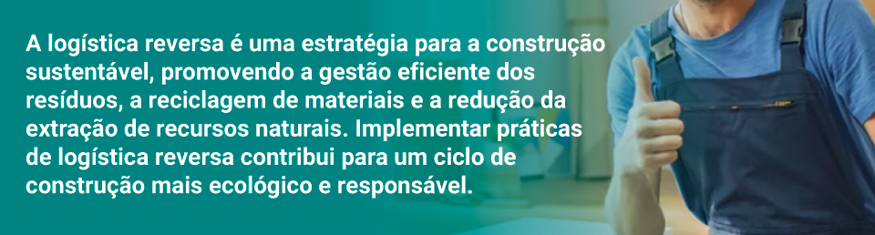 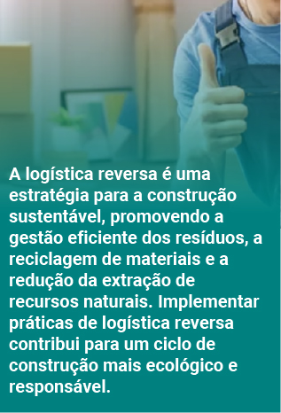A logística reversa é uma estratégia para a construção sustentável, promovendo a gestão eficiente dos resíduos, a reciclagem de materiais e a redução da extração de recursos naturais. Implementar práticas de logística reversa contribui para um ciclo de construção mais ecológico e responsável.
A reutilização de materiais e ferramentas é uma prática que contribui para a redução de resíduos e o uso mais eficiente dos recursos. Essa abordagem não só prolonga a vida útil dos itens, mas também diminui a necessidade de novos materiais, promovendo uma economia circular no setor da construção civil.
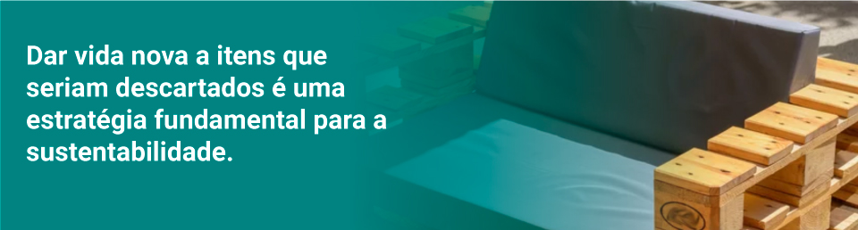 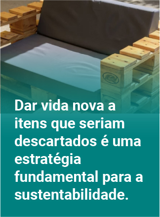Dar vida nova a itens que seriam descartados é uma estratégia fundamental para a sustentabilidade.
Muitos materiais de construção, como revestimentos, louças e metais, podem ser reutilizados se estiverem em boas condições e se encaixarem na proposta do projeto. Por exemplo, pisos de cerâmica ou madeira, bancadas de granito e pias de porcelana podem ser cuidadosamente removidos e reinstalados em novas construções. Essa prática não só reduz o volume de resíduos enviados para aterros, mas também conserva os recursos naturais utilizados para fabricar novos materiais.
Exemplos de reutilização de materiais são abundantes na construção sustentável. Móveis de madeira de demolição são particularmente valorizados por sua estética única e durabilidade. Esses móveis podem ser restaurados e incorporados a novos projetos, conferindo um charme rústico e sustentável aos ambientes. A reciclagem de metais nas estruturas também é uma prática comum. Estruturas de aço, por exemplo, podem ser desmontadas e reutilizadas em outras obras, enquanto sucata de metal pode ser fundida e transformada em novos componentes estruturais. Além disso, o reaproveitamento de tecidos, como cortinas, estofados e tapetes, contribui para a redução de resíduos têxteis e a preservação de recursos naturais.
Exemplo no que diz respeito à reutilização de produtos, no site da empresa Rotor Deconstruction estão catalogadas desde vigas de madeira a luminárias de banheiro para reaproveitamento. O reúso desses itens contribui para a preservação ambiental, além de apoiar os esforços na conservação histórica de edifícios.
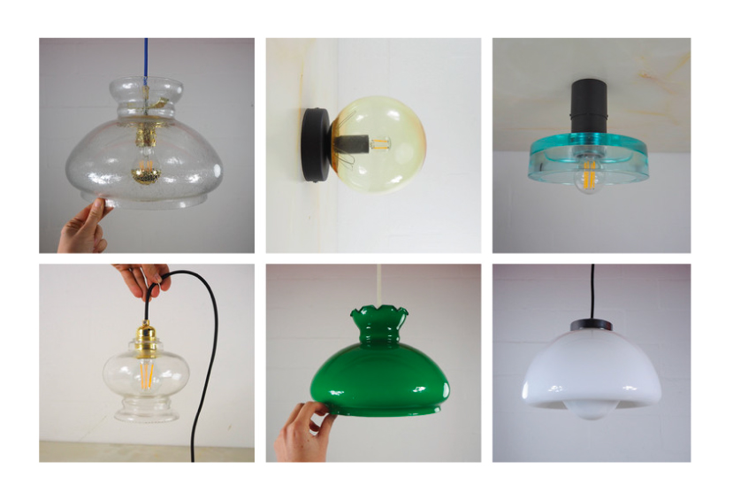
Luminárias recuperadas para reutilização
Fonte: Souza (2021)
Seis fotografias de modelos diferentes de luminárias para reutilização do catálogo da empresa Rotor Deconstruction.
A reutilização de ferramentas é outra prática importante. Em vez de descartar ferramentas que ainda estão em boas condições, muitas empresas optam por alugar ferramentas, promovendo o reúso e a economia de recursos. O aluguel de ferramentas não só reduz os custos para os construtores, mas também diminui a demanda por novas ferramentas, contribuindo para a conservação dos recursos naturais necessários para fabricá-las. Ferramentas como furadeiras, serras e andaimes podem ser reutilizadas em vários projetos, aumentando sua vida útil e reduzindo o impacto ambiental.
Além do aluguel, a manutenção e a reparação de ferramentas são práticas que prolongam sua vida útil. Ferramentas que recebem manutenção regular funcionam de maneira mais eficiente e duram mais tempo, evitando a necessidade de substituição frequente. Empresas de construção podem estabelecer programas de manutenção preventiva e corretiva para suas ferramentas, garantindo que estejam sempre em boas condições de uso.
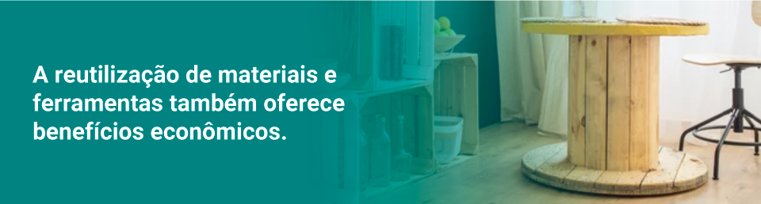 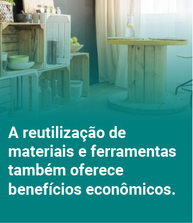A reutilização de materiais e ferramentas também oferece benefícios econômicos.
Reutilizar itens existentes pode reduzir significativamente os custos de construção, uma vez que menos materiais novos precisam ser comprados. Além disso, práticas de reutilização podem atrair clientes que valorizam a sustentabilidade e estão dispostos a pagar um prêmio por projetos que utilizem materiais reciclados e reutilizados. Essa abordagem pode, portanto, ser uma vantagem competitiva para empresas de construção que adotam práticas sustentáveis. Dessa forma, não só reduz a quantidade de resíduos gerados, mas também conserva recursos naturais, diminuindo custos e promovendo uma economia circular.
A redução de desperdício compreende a implementação de estratégias e processos que minimizam a geração de resíduos e otimizam o uso de recursos, resultando em um processo construtivo mais eficiente, econômico e ambientalmente responsável. Essa prática começa com o planejamento cuidadoso e a execução meticulosa das obras. O uso de tecnologias avançadas, como software de modelagem em 2D e 3D, permite prever e evitar erros de projeto antes mesmo do início da construção. Esse tipo de software facilita a visualização detalhada do projeto, identificando possíveis problemas e ajustando soluções de forma proativa, reduz a necessidade de retrabalhos e o desperdício de materiais e garante o uso mais eficiente dos recursos.
Além do uso de tecnologia, a educação e o treinamento da equipe são fundamentais para minimizar erros e desperdícios no canteiro de obras.
Capacitar os trabalhadores para adotar práticas sustentáveis e eficientes é crucial, e muitas empresas de fornecimento de materiais e ferramentas oferecem cursos de formação profissional gratuitos, que podem ser recomendados aos colaboradores. Esses treinamentos ajudam a equipe a entender a importância da redução de desperdício e a implementar técnicas adequadas para alcançar esse objetivo.
Organizar as etapas de construção de maneira lógica e sequencial também é essencial para evitar interrupções desnecessárias e retrabalhos, contribuindo para um processo mais eficiente.
A adoção de métodos de melhoria contínua, como o Kaizen, envolve a participação de todos os membros da equipe na busca por melhorias constantes nos processos, resultando em uma obra mais eficiente e com menos desperdício.
O descarte responsável de resíduos também é importante nessa abordagem. A contratação de caçambas adequadas e a implementação de um sistema de segregação e reciclagem garantem que os materiais descartados sejam tratados de maneira ambientalmente correta. A reciclagem de materiais, como concreto, madeira e metal, não só reduz a quantidade de resíduos enviados para aterros, mas também permite que esses materiais sejam reintroduzidos na cadeia produtiva, economizando recursos naturais e energia.
Em resumo, a redução de desperdício na construção civil é alcançada por meio da combinação de planejamento cuidadoso, uso de tecnologia avançada, educação e treinamento da equipe, organização eficiente da obra e descarte responsável de resíduos. Essas práticas promovem a sustentabilidade ambiental e resultam em economia de recursos e custos, tornando o processo construtivo mais eficiente e responsável. Adotar estratégias para reduzir o desperdício é fundamental para garantir que os projetos de construção agreguem valor de maneira significativa e duradoura.
A adoção de práticas sustentáveis e a implementação dos princípios da lean construction não apenas promovem a eficiência e a sustentabilidade ambiental, mas também abrem novas oportunidades de negócios no setor da construção civil. O cuidado com a sustentabilidade, desde o desenvolvimento do projeto até a execução da obra, pode se tornar um diferencial competitivo, possibilitando a criação de um nicho de mercado especializado e valorizado.
Profissionais da construção que adotam práticas sustentáveis e integram os princípios da lean construction em seus projetos podem utilizar essa abordagem como um forte diferencial de marketing. Ao destacar o compromisso com a sustentabilidade, esses profissionais podem atrair clientes que valorizam práticas ambientalmente responsáveis e estão dispostos a investir em projetos que minimizem o impacto ambiental. Esse nicho de mercado, focado na sustentabilidade e na eficiência, tende a crescer à medida que a consciência ambiental aumenta entre consumidores e empresas.
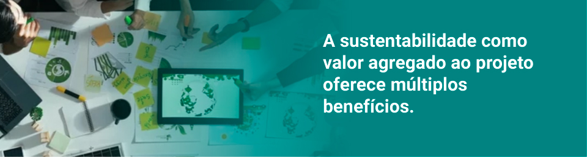 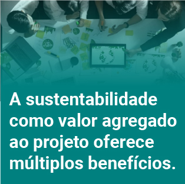A sustentabilidade como valor agregado ao projeto oferece múltiplos benefícios.
Para os clientes, um projeto sustentável significa economia a longo prazo, devido ao menor consumo de recursos, como energia e água, além de uma redução significativa nos custos operacionais e de manutenção. Para a sociedade, práticas de construção sustentáveis contribuem para a preservação do meio ambiente e para a melhoria da qualidade de vida das comunidades. Para os profissionais da construção, a adoção dessas práticas pode resultar em maior reconhecimento e reputação no mercado, além de abrir portas para novos negócios e parcerias.
Exemplos de escritórios de arquitetura e design que adotam a sustentabilidade como premissa em seus projetos demonstram o potencial desse nicho de mercado. Escritórios que se destacam por suas práticas sustentáveis não só contribuem para a preservação ambiental, mas também obtêm vantagens competitivas significativas. Esses escritórios são frequentemente procurados por clientes que buscam soluções inovadoras e responsáveis, estabelecendo uma base de clientes leais.
Um exemplo é a Triptyque Architecture (Brasil/França). Esse escritório é famoso por seus projetos que combinam design inovador e sustentabilidade, incluindo o uso de materiais reciclados e tecnologias de energia renovável. Outro exemplo é a Cubo Verde Arquitetura Sustentável, que promove a sustentabilidade como um diferencial competitivo, destacando a utilização de materiais ecológicos, eficiência energética e práticas de construção sustentável.
Na Residência das Pedras, projeto do escritório Cubo Verde, a maioria dos materiais veio do próprio terreno ou de áreas próximas, como as pedras da escavação e as madeiras de uma plantação de pínus feita há 10 anos. Os tijolos usados nas bancadas e paredes foram retirados de uma olaria desativada da família.
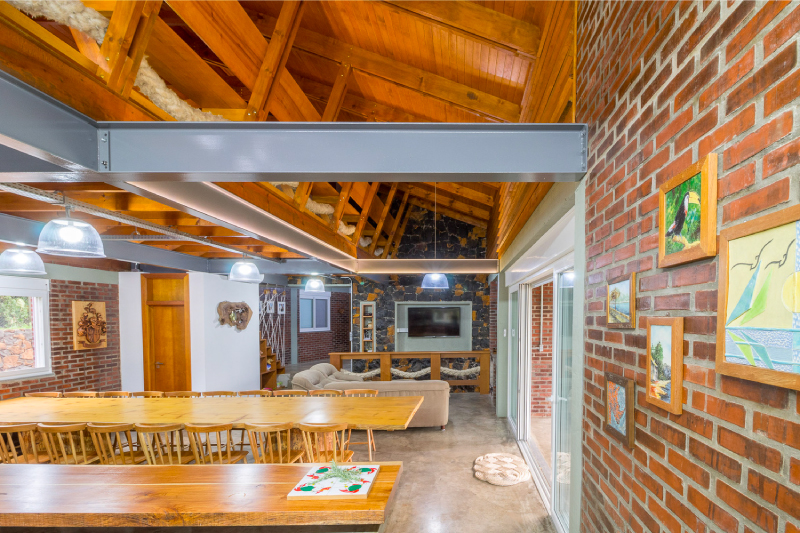
Vista interna da Residência das Pedras
Fonte: Guimarães apud ArchDaily (2021)
Vista interna de um ambiente com sala de estar, jantar e cozinha integrados, da Residência das Pedras, evidenciando o uso de materiais locais, como pedras e tijolos cerâmicos aparentes nas paredes e forro aparente de madeira.
A implementação de práticas sustentáveis e a promoção da lean construction podem também resultar em benefícios econômicos diretos. A redução de desperdícios, o uso eficiente de recursos e a adoção de tecnologias avançadas não só diminuem os custos operacionais, como também aumentam a produtividade e a qualidade dos projetos. Além disso, incentivos governamentais e certificações ambientais, como LEED (Leadership in Energy and Environmental Design) ou AQUA (Alta Qualidade Ambiental), podem oferecer vantagens adicionais, como descontos em impostos e acesso a financiamentos especiais.
Ao comunicar esses benefícios de maneira eficaz, os profissionais da construção podem educar os clientes sobre a importância da sustentabilidade e a vantagem de investir em projetos que adotem práticas responsáveis. Essa abordagem educativa aumenta a conscientização dos clientes, além de fortalecer a relação de confiança e colaboração entre eles e os profissionais, resultando em projetos que sejam não apenas sustentáveis, mas também bem-sucedidos e valorizados.
A incorporação de práticas sustentáveis e dos princípios da lean construction na construção civil não só contribui para a preservação ambiental e a eficiência dos projetos, como também cria um nicho de mercado altamente valorizado. Profissionais que adotam essas práticas podem usar essa abordagem como um diferencial competitivo, agregando valor aos seus projetos, atraindo clientes conscientes e estabelecendo uma reputação sólida no mercado. A sustentabilidade, portanto, não é apenas uma responsabilidade, mas uma oportunidade estratégica para inovar e prosperar no setor da construção civil.
A integração dos princípios da lean construction com práticas de sustentabilidade é essencial para transformar a construção civil, promovendo eficiência e minimizando impactos ambientais. A lean construction, originada dos conceitos de produção enxuta da Toyota, foca na maximização do valor ao cliente e na redução de desperdícios. Quando combinada com a sustentabilidade, que inclui o consumo consciente de recursos, a logística reversa e a reutilização de materiais e ferramentas, resulta em um processo construtivo mais responsável e eficiente. A adoção dessas práticas não só melhora a gestão dos recursos e reduz os resíduos, mas também contribui para a economia circular e a preservação ambiental.
Além de seus benefícios ambientais, a aplicação de práticas sustentáveis oferece uma vantagem competitiva significativa para os profissionais da construção. Ao adotar essas abordagens, os profissionais podem se destacar no mercado, atraindo clientes que valorizam a responsabilidade ambiental e a inovação. Esse diferencial não só agrega valor aos projetos, mas também pode abrir novas oportunidades de negócios e fortalecer a reputação no setor.
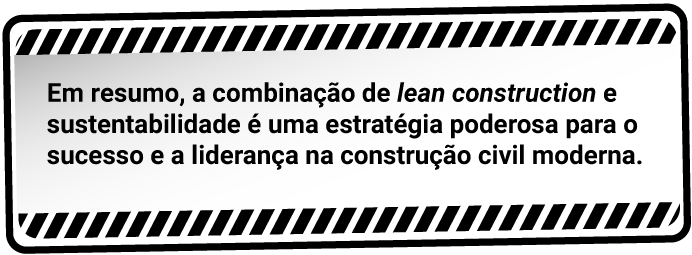 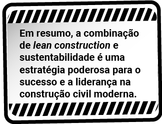Em resumo, a combinação de lean construction e sustentabilidade é uma estratégia poderosa para o sucesso e a liderança na construção civil moderna.